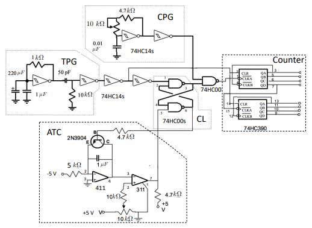
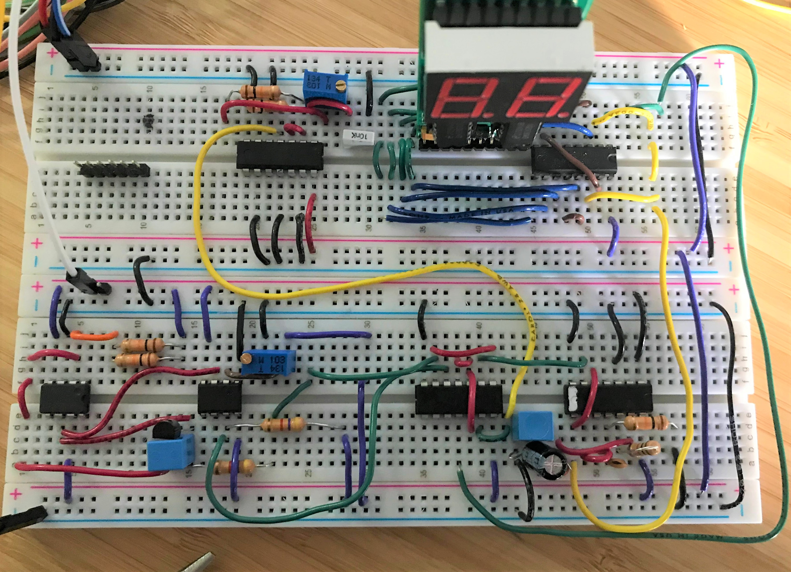

Autonomous Treasure Retrieval Robot
A robot designed to navigate an obstacle course while retrieving objects for 2022 Annual Engineering Physics Robotics Competition
Learn moreA common problem in electronics is being able to process and analyze analog signals such as sound from a microphone or light in a camera sensor using digital systems, such as those in a computer. To achieve this, we use an analog to digital converter. In this project, I designed and built an analog to digital converter using a variety of electrical components Op-Amps, a 7 segment digital display, logic gates and transistors. During this process, I used a variety of electrical tools to debug and verify my circuits including an oscilloscope and a logic analyzer. The circuit takes an input analog voltage signal as an input and displays the voltage value to the seven segment display.
The circuit schematic is seen below.
A gate pulses are generated at a frequency proportional to the magnitude of the input voltage. This pulse marks the start of data collection for other parts of the circuit. A clock pulse generator outputs a signal of constant frequency which is used to measure the period of the trigger pulse. The counter is triggered by a gate pulse and counts the number of clock pulses until the next gate pulse is recieved. The count has a linear relationship to the input voltage and we then use this to display to the 7 segment display.
The constructed circuit is seen below.

A robot designed to navigate an obstacle course while retrieving objects for 2022 Annual Engineering Physics Robotics Competition
Learn more
As a software member of this student design team team, I am working on building an autonomous sailbot to sail from Vancouver, BC to Maui, HI.
Learn more